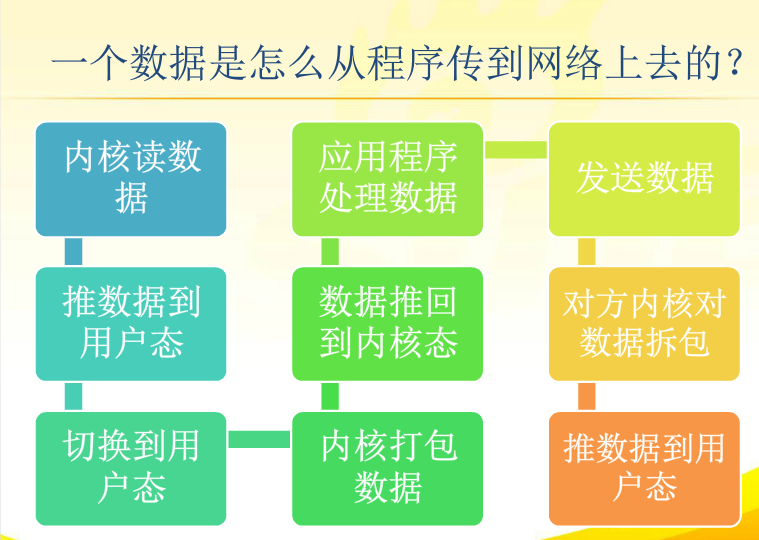
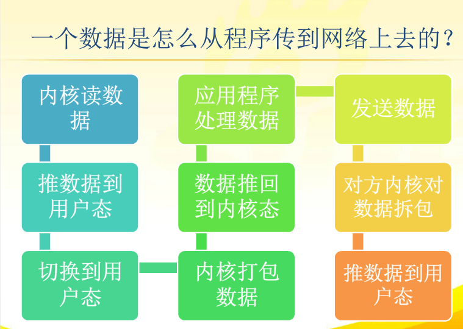

个人总结
1.网络I/O模型有两个判断标准：是否阻塞，同步还是异步，这两个标准是两回事。
2.以read操作为例：
（1）内核等待数据可读(实际的数据到达是由操作系统完成的)
（2）将内核读到的数据拷贝到进程（用户态）
当用户进程阻塞在了等待数据可读的阶段，即为阻塞，不阻塞在该阶段即为非阻塞
当用户进程将内核数据拷贝到进程，即为同步，当内核主动将内核数据拷贝到进程的缓冲区即为异步。
3.针对第二条不难得出结论：判断是否是block的依据是用户进程是否block在等待数据阶段，判断是同步还是异步的依据是把数据从内核态复制到用户态是内核主动还用户进程主动
4.常见IO模型有如下几种：同步阻塞模型、同步非阻塞模型、IO多路复用模型、异步非阻塞模型
同步阻塞模型、同步非阻塞模型、IO多路复用模型均为同步模型，
异步虽然是在第二个步骤才区分，不过只要是异步之间区分阻塞和非阻塞已经没有意义，异步肯定是非阻塞的
IO多路复用模型有人叫它异步阻塞模型，这是错误的，它实际上是同步的（进程主动去内核取数据），在第一步是没有阻塞的，究其原理是通过select机制进行的，可以理解为一种特殊的同步非阻塞模型
5.IO多路复用的核心是Reactor模式
异步非阻塞IO的核心是Proactor模式（核心是回调）
6.java BIO包是同步阻塞模型，NIO包是多路复用模型，NIO2(AIO)包异步非阻塞模型
7.关于非阻塞同步模型，它实际上是检测是否可读，如果不可读就会直接返回，后面的绝对不再执行，因此需要使用用户进程需要使用轮训去判断是否可读！！恼火的东西
原文
1、前言
在网络编程中，阻塞、非阻塞、同步、异步经常被提到。unix网络编程第一卷第六章专门讨论五种不同的IO模型，Stevens讲的非常详细，我记得去年看第一遍时候，似懂非懂，没有深入理解。网上有详细的分析：http://blog.csdn.net/historyasamirror/article/details/5778378。我结合网上博客和书总结一下，加以区别，加深理解。
2、数据流向
网络IO操作实际过程涉及到内核和调用这个IO操作的进程。以read为例，read的具体操作分为以下两个部分:
（1）内核等待数据可读
（2）将内核读到的数据拷贝到进程
详细过程如下图所示：
 
3、网络IO模型详细分析
常见的IO模型有阻塞、非阻塞、IO多路复用，异步。以一个生动形象的例子来说明这四个概念。周末我和女友去逛街，中午饿了，我们准备去吃饭。周末人多，吃饭需要排队，我和女友有以下几种方案：
（1）我和女友点完餐后，不知道什么时候能做好，只好坐在餐厅里面等，直到做好，然后吃完才离开。
女友本想还和我一起逛街的，但是不知道饭能什么时候做好，只好和我一起在餐厅等，而不能去逛街，直到吃完饭才能去逛街，中间等待做饭的时间浪费掉了。这就是典型的阻塞。网络中IO阻塞如下图所示：


（2）我女友不甘心白白在这等，又想去逛商场，又担心饭好了。所以我们逛一会，回来询问服务员饭好了没有，来来回回好多次，饭都还没吃都快累死了啦。这就是非阻塞。需要不断的询问，是否准备好了。网络IO非阻塞如下图所示：

（3）与第二个方案差不多，餐厅安装了电子屏幕用来显示点餐的状态，这样我和女友逛街一会，回来就不用去询问服务员了，直接看电子屏幕就可以了。这样每个人的餐是否好了，都直接看电子屏幕就可以了，这就是典型的IO多路复用，如select、poll、epoll。网络IO具体模型如下图所示：


（4）女友不想逛街，又餐厅太吵了，回家好好休息一下。于是我们叫外卖，打个电话点餐，然后我和女友可以在家好好休息一下，饭好了送货员送到家里来。这就是典型的异步，只需要打个电话说一下，然后可以做自己的事情，饭好了就送来了。linux提供了AIO库函数实现异步，但是用的很少。目前有很多开源的异步IO库，例如libevent、libev、libuv。异步过程如下图所示：


4、同步与异步
实际上同步与异步是针对应用程序与内核的交互而言的。同步过程中进程触发IO操作并等待或者轮询的去查看IO操作是否完成。异步过程中进程触发IO操作以后，直接返回，做自己的事情，IO交给内核来处理，完成后内核通知进程IO完成。同步与异步如下图所示：


5、阻塞与非阻塞
简单理解为需要做一件事能不能立即得到返回应答，如果不能立即获得返回，需要等待，那就阻塞了，否则就可以理解为非阻塞。详细区别如下图所示：


参考资料：
冷静思考，勇敢面对，把握未来！